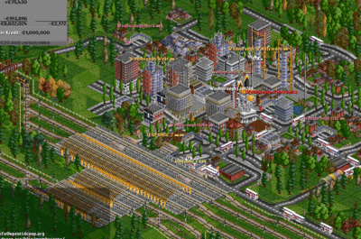
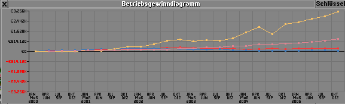
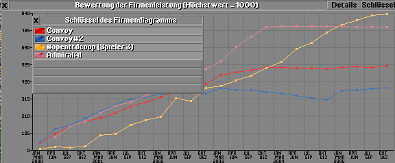
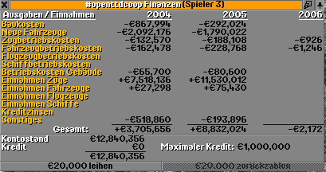

#openttdcoop vs. AI
Yesterday evening we had mostly spontaneous hit at testing some of the new AIs which are around for the NoAI branch which is currently very actively developed for OpenTTD. Using r13726-noai loaded with 2x convoy (written by GeekToo) and 1x AdmiralAI (written by Yexo), the team of Ammler, Mucht, Osai, dihedral and myself set out to have a measure on the playing strength of the current AIs. Later Tim joined in on us. Yexo, the creator AdmiralAI, of one of the best AI around (see tournament chart), supervised the AIs and took care of the general setup. 
Terminal2 and the adjacent town – one end of our initial rail line. We haven’t been alone there since the very beginning.

We had some troubles with a first start on a small (256×256 tiles), crowded map. The AI died after very short time (where both we and the AI were approx. performing equally well). Unfortunately an AI cannot be re-vived after it crashes. Then we decided to go with a passenger only game on a slightly larger map: 512 tiles squared and no industry, only NewGRF in use was LongVehicles which allows decent busses. Starting year was 2000.
After some initial discussion about the map we decided to go for a ICE / S-bahn concept and picked two areas which we wanted to start with. In order to match somewhat the building speed of the AI we assigned the different areas (terminal1, terminal2, s-bahn1, s-bahn2, intercity connection) to different people and then we unpaused the server to start.
And it didn’t look well in the beginning for us coopers. We managed to build the two ICE terminals with one train and barely some basic feeders to them. Money was scarce and the AI was already making good money. Slowly though the feeders grew and the train(s) started to generate considerable revenue. Once the trains ran fully loaded between the ICE terminals, our revenue sky rocketed and after three years we had about twice the income of that of the 2nd best. Soon then we developed a 3rd and 4th metropolitan area with each its own ICE terminal and feeder system, providing good service and thus also taking passengers from the AI competitors.

Company value of the companies. Coop as usual in orange, AdmiralAI in pink

Company revenues

After the 5th year we decided to stop the game as the winner was clear and our motivation to started to drop – probably also due to the hour of the day 🙂
It has to be noted though, that the AIs only worked with busses while we generated our income from long distance, high velocity (305 km/h monorail) trains. Therefore our transported distance was on average further while the speed certainly wasn’t slower.
Another thing worth noticing is the user interface to giving orders. If it comes to a time efficient system the mouse only interface started to really slow us down, especially in the 2nd half of the game where we were generating more money than we could spend jointly together. So, if someone has some good ideas and also an idea how to implement it: please! Very much welcome so.
Saves from the games are available here, the final save is this. 
Company performances


Our income table after five years of playing
Despite the fact that we won this game – difficulty will be harder on a smaller map as we saw in the first, crashed test game. Also, of course, we profited a lot from good co-ordination, using teamspeak a lot and some advance planning before the game started. One player alone couldn’t have achieved what we did – this was coopetition at its best 🙂 . And it’s a lot of fun to play against competent opponent AIs who just build sensibly and don’t destroy the landscape. Let’s hope for a future where the AIs might even get stronger and both, the AI (developers) and we, might learn from eachother!
See more screenshots here (by dihedral).
Categories: Community News, Coopetition, Development, Roleplay
Osai July 20, 2008 08:30
I totally agree with you. It is a lot of fun to play competitive. Right now it doesn’t matter wether its a human team or an AI. The AIs are building decent and have the same problems as human players have. The detailed analysis showed that the AIs always played at the financial limits.
Of course we used a totally different way to earn money, so I don’t know if it is comparable with our result.
The next time we should create busses only as well. But an absolutely necessary requirement is the optimization of the terrible order menu. The drop down menus are just too complicated and it takes three clicks to create an order for ‘transferring and leaving empty’. I would propose some hotkeys/shortcuts for predefined options, e.g.:
select the order + 1 on the keyboard = load till full (any cargo) and double 1 = all cargo types
select the order + 2 = unload
select the order + 3 = transfer + take cargo and double 3 = transfer + leave empty
This is just a proposal but would really accelerate the creation of orders.
Regards,
Osai